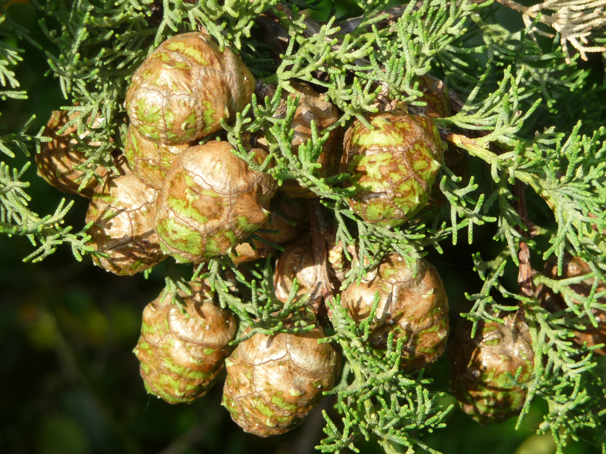

Cupressaceae
cypress/cedar family
Sequoia sempervirens (California redwood) from Wikimedia Commons by KENPEI - KENPEI's photo, CC BY-SA 3.0 |
 Sequoiadendron giganteum (giant sequoia) from Wikimedia Commons by Tuxyso, CC BY-SA 3.0 |
Juniperus phoenicea (Phoenician juniper) from Wikimedia Commons by Eckhard Pecher - Own work, CC BY 2.5 |
 Cupressus sempervirens (Mediterranean cypress) from Wikimedia Commons by Lucarelli - Own work, CC BY-SA 3.0 |
{kind=link}
{kind=link}
{kind=link}
botanical characteristics
Botany in a Day, p. 48
- growth form
- mostly evergreen trees or shrubs
- bark/leaves
- small, scaly leaves
- most species are richly aromatic
- reproductive structures
- separate male and female cones, sometimes on separate trees
- some cones have merged, fleshy scales and form 'berries' (e.g., juniper berries)
distribution
Botany in a Day, p. 48 | "Cupressaceae", Wikipedia
- about 27-30 genera and 130-40 species worldwide
- widely distributed conifer family, with a near-global range in all continents except for Antarctica, stretching from 70°N in arctic Norway to 55°S in southernmost Chile, further south than any other conifer species
- Juniperus indica reaches 4930 m altitude in Tibet
- despite the wide overall distribution, many genera and species show very restricted relictual distributions, and many are endangered species
- the world's largest (Sequoiadendron giganteum) and current tallest (Sequoia sempervirens) trees belong to the Cupressaceae, as do six of the ten longest-lived tree species
ecological roles
"Cupressaceae", Wikipedia
- most habitats on land are occupied, with the exceptions of polar tundra and tropical lowland rainforest
- several species are important components of temperate rainforests and tropical highland cloud forests
- several genera are an alternate host of Gymnosporangium rust, which damages apples and other related trees in the subfamily Maloideae
common pharmacological constituents
"Cupressaceae", Wikipedia
- Cupressaceae trees contain a wide range of extractives, especially terpenes and terpenoids, both of which have strong and often pleasant odors
- the heartwood, bark and leaves are the tree parts richest in terpenes
- some sesquiterpenoids (e.g. bisabolanes, cubenanes, guaianes, ylanganes, himachalanes, longifolanes, longibornanes, longipinanes, cedranes, thujopsanes) are present in Cupressaceae plants and other conifers
- chamigranes, cuparanes, widdranes and acoranes are more distinctive for Cupressaceae
- tropolone derivatives, such as nootkatin, chanootin, thujaplicinol and hinokitiol are particularly characteristic for Cupressaceae
patterns in medicinal actions
- highly aromatic: clears space, the respiratory system, the mind, the channels of the body (esp. the urinary tract, the nerves)
- stimulating to the digestive and excretory systems
- anti-inflammatory and analgesic
traditional/cultural uses
Botany in a Day, p. 48
- the wood of Cupressaceae trees is naturally resistant to decay and repels insects and thus is frequently used for construction
- a tea of twigs of Calocedrus (incense cedar) can be sipped for stomach issues or inhaled to aid a head cold
- Chamaecyparis (white cedar) used in sweat lodges to ease rheumatism, arthritis, and other aches
- white cedar tea is a powerful diuretic
- tea of Cupressus (cypress) leaves used as an internal vulnerary/hemostatic and for support for colds
- cones of Juniperus (juniper) used to make flavor gin
- juniper berries also used as a carminative, a duiretic, and for their antiviral, analgesic, and anti-inflammatory properties
- tea of Sequoia (redwood) leaves is astringent, aromatic, expectorant, and antiseptic to the urinary tract
- resin from Taxodium (bald cypress) is analgesic
- Thuja (red cedar) used as a diaphoretic, emmenagogue, and a counter-irritant poultice for rheumatic pains
warnings
Botany in a Day, p. 48-9 | "Cupressaceae", Wikipedia
- Taxus (yew) is a highly toxic lookalike for some Cupressaceae members
- the pollen of many genera of Cupressaceae is allergenic, causing major hay fever problems in areas where they are abundant
- thujone (present in Juniperus, Thuja, and other genera) is toxic in high doses and can cause kidney damage
extra information
prominent genera
- Calocedrus (incense cedars)
- Chamaecyparis (white cedars)
- Cryptomeria (Japanese redwoods/cedars)
- Cupressus (cypresses)
- Juniperus (junipers)
- Sequoia (redwoods)
- Sequoiadendron (giant sequoias)
- Taxodium (bald cypresses)
- Thuja (arborvitaes)
plant highlights
see list of materia medica entries here
Thuja occidentalis
 from Wikimedia Commons by Joshua Mayer from Madison, WI, USA - Whitecedar Leaf, CC BY-SA 2.0 |
common names: arborvitae, northern white cedar en español: tuya del Canadá, tuya occidental |
description
"Thuja occidentalis", Wikipedia
- small or medium-sized tree
- tree is often stunted or prostrate in less favorable locations
- bark is red-brown, furrowed and peels in narrow, longitudinal strips
- fan-like branches and scaly leaves
- foliage forms in flat sprays with scale-like leaves
- seed cones are slender, yellow-green, ripening to brown, with six to eight overlapping scales
- branches may take root if the tree falls
distribution
"Thuja occidentalis", Wikipedia
- native to the southern part of eastern Canada and the adjacent part of the northern United States
- isolated populations occur in west-central Manitoba, and to the south in the northeastern US through the Appalachian Mountains
- in Canada, its range reaches the Arctic treeline and the southern tip of Hudson Bay
- grows mainly in places with cooler summers
medicinal/magical uses
The Modern Herbal Dispensatory, p. 310-1
- anthelminthic, antifungal, antiparasitic, aromatic, emmenagogue, expectorant, warming, drying
- strong antifungal remedy for candida, athlete's foot, and jock itch
- antiparasitic action against ringworm, amoebic dysentery, and giardia
- leaves are antiviral
The New Age Herbalist, p. 56
- remedy of Indigenous North Americans for delayed menstruation
- stimulates the smooth muscle of the uterus and bronchial passages
- stimulating expectorant, useful for bronchitis
- externally as a wash for infectious skin diseases like impetigo or scabies
- ointment is a reputed cure for warts
- hot compress relieves rheumatic pains
preparation methods
The Modern Herbal Dispensatory, p. 310-1
- infusion
- tincture
warnings
The Modern Herbal Dispensatory, p. 310-1 | The New Age Herbalist, p. 56
- not recommended for use during pregnancy; historical use as an abortifacient
- not recommended for long-term use as it may irritate the kidneys, no more than a week or two at a time
- risk of toxicity with the tincture, but not with the infusion
- use only as prescribed by a qualified practitioner
sources
"Cupressaceae" on Wikipedia. Retrieved 20 August 2025.
Easely, Thomas and Steven Horne. The Modern Herbal Dispensatory (2016)
Elpel, Thomas J. Botany in a Day: The Patterns Method of Plant Identification (2021)
Goldberg Blackthorn, Samantha. Ace of Cups Herbal Medicine and Botanical Magic Herbal School (2024)
Mabey, Richard et al. The New Age Herbalist (1988)
"Thuja occidentalis" on Wikipedia. Retrieved 20 August 2025.